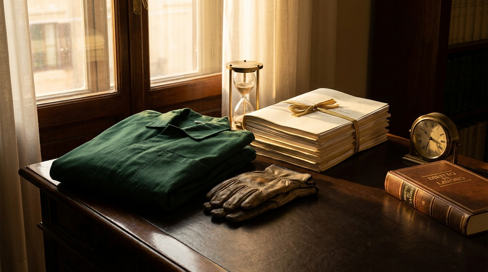

Tempo tuta e formazione sicurezza: sono orario di lavoro
La Corte di Cassazione torna sul cosiddetto 'tempo tuta' e sulla formazione obbligatoria in materia di sicurezza. Entrambi, secondo i giudici, rientrano nell'orario di lavoro. La conseguenza è diretta: su quel tempo il datore deve versare contributi previdenziali e premi INAIL. Una pronuncia che pesa soprattutto sui settori a turni e ad alta intensità organizzativa, come la sanità privata.

Il caso
La controversia nasce dal recupero contributivo richiesto dagli enti previdenziali nei confronti di una struttura sanitaria privata. Oggetto del contendere: il tempo impiegato dai lavoratori per indossare e dismettere la divisa di servizio (il cosiddetto "tempo tuta") e quello dedicato alla formazione obbligatoria sulla sicurezza.
La Cassazione Civile, Sezione Lavoro, ha confermato che questi periodi sono parte integrante dell'orario di lavoro. Da qui l'obbligo, per il datore, di assolvere agli oneri contributivi verso INPS e ai premi assicurativi verso INAIL anche su tali frazioni temporali.
Inquadramento normativo
Il punto di partenza è la nozione di orario di lavoro. È considerato tale ogni periodo in cui il lavoratore è al lavoro, a disposizione del datore e nell'esercizio delle sue mansioni. La giurisprudenza, nel tempo, ha precisato che ciò che rileva è l'eterodirezione: quando l'attività è imposta e disciplinata dal datore di lavoro, quel tempo è retribuibile e contribuibile.
Sul "tempo tuta", la Corte applica un criterio costante: se le modalità di vestizione e svestizione sono eterodirette - cioè il datore stabilisce dove, come e quando indossare la divisa - quel tempo è lavoro. Nei contesti sanitari la divisa risponde a esigenze igieniche e di sicurezza non disponibili dal singolo lavoratore: la vestizione avviene in azienda, secondo protocolli precisi. Manca quindi quel margine di autonomia che renderebbe il tempo "privato".
Quanto alla formazione, l'art. 37 del D.Lgs. 81/2008 impone al datore di assicurare a ciascun lavoratore una formazione sufficiente e adeguata in materia di salute e sicurezza. Si tratta di un obbligo di legge, svolto nell'interesse e su iniziativa del datore. Ne deriva, con coerenza, che il tempo dedicato a tale formazione rientra nell'orario di lavoro.
Implicazioni pratiche
La pronuncia ha un riflesso economico immediato. Non incide solo sulla retribuzione dovuta al lavoratore, ma soprattutto sul rapporto con gli enti previdenziali.
Il primo effetto riguarda i contributi: la base imponibile previdenziale deve includere anche il tempo tuta e la formazione obbligatoria. Se questi periodi non sono stati conteggiati, gli enti possono procedere al recupero, con sanzioni e somme aggiuntive per omissione contributiva.
Il secondo effetto riguarda la copertura INAIL. Il tempo dedicato a vestizione e formazione è tempo di lavoro anche ai fini assicurativi: un infortunio occorso in quei momenti può rientrare nella tutela.
I settori più esposti sono quelli organizzati per turni e con obblighi di divisa o protocolli rigidi: sanità privata, RSA, laboratori, logistica, alimentare. In questi contesti il margine di gestione "libera" da parte del lavoratore è minimo, e proprio questo rende il tempo eterodiretto.
È utile distinguere. Non tutto il tempo tuta è automaticamente orario di lavoro: dove la divisa può essere indossata liberamente, anche a casa, e non vi sono prescrizioni stringenti, la valutazione può cambiare. Conta sempre il grado di eterodirezione concreto, non l'etichetta formale.
Cosa fare in concreto
- Mappate i tempi non produttivi: verificate vestizione, svestizione e formazione obbligatoria, misurandone la durata media per reparto o mansione.
- Valutate il grado di eterodirezione: controllate regolamenti interni, protocolli igienici e ordini di servizio che impongono modalità e luoghi di vestizione.
- Allineate la base contributiva: includete questi periodi nel calcolo dei contributi INPS e dei premi INAIL, riducendo il rischio di recupero e sanzioni.
- Aggiornate l'organizzazione del lavoro: definite per iscritto orari, sedi e modalità, così da rendere trasparenti i tempi computati.
- Verificate il pregresso: in presenza di possibili omissioni, valutate con un professionista le ipotesi di regolarizzazione prima di un eventuale accertamento.
Consigliamo di non sottovalutare l'impatto retroattivo del recupero contributivo: gli accertamenti coprono periodi pluriennali e l'esposizione complessiva può essere significativa.
Disclaimer
Contributo informativo a cura di Tamburro & Partners - Avv. Giuseppe Tamburro. Non costituisce parere legale.
Ogni storia di lavoro ha i suoi tempi.
Se gestisci HR e vuoi un confronto su contenzioso, ispezioni o licenziamenti, scrivi allo studio. Ti rispondiamo entro un giorno lavorativo.